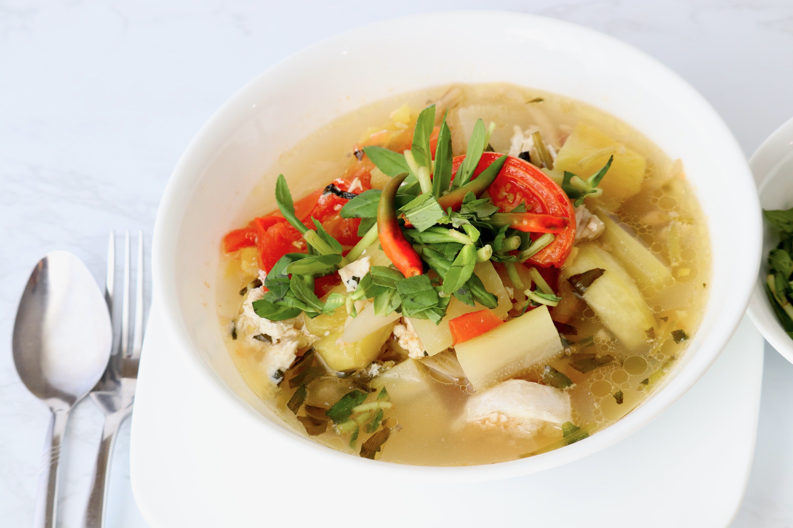
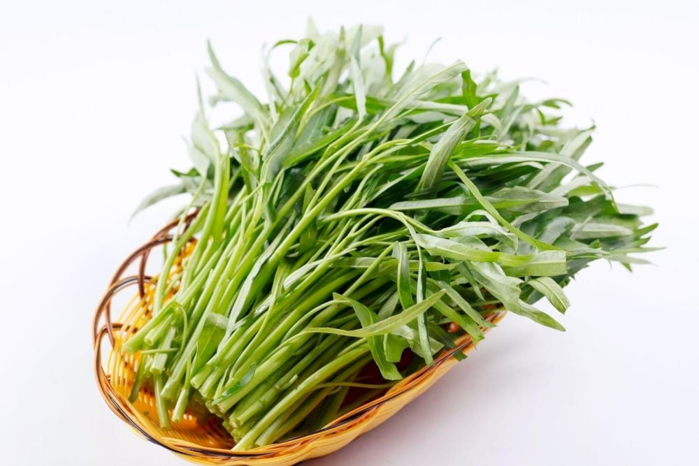
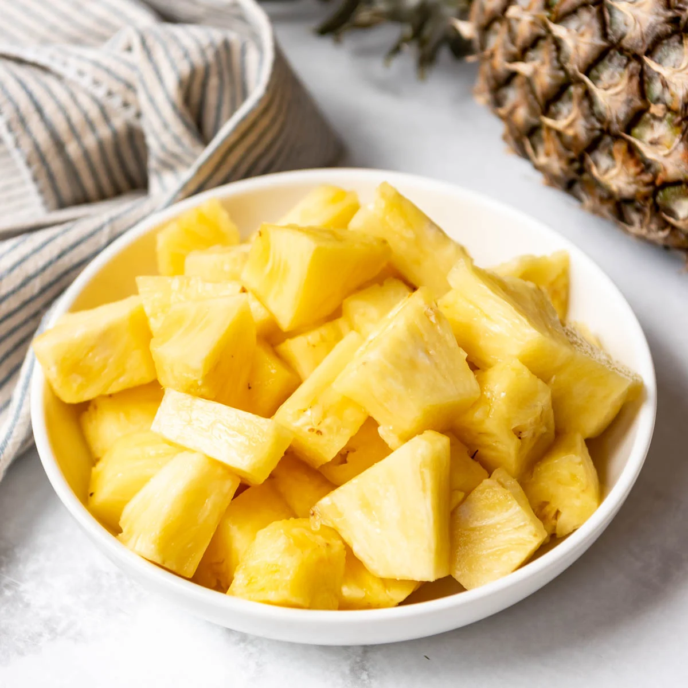
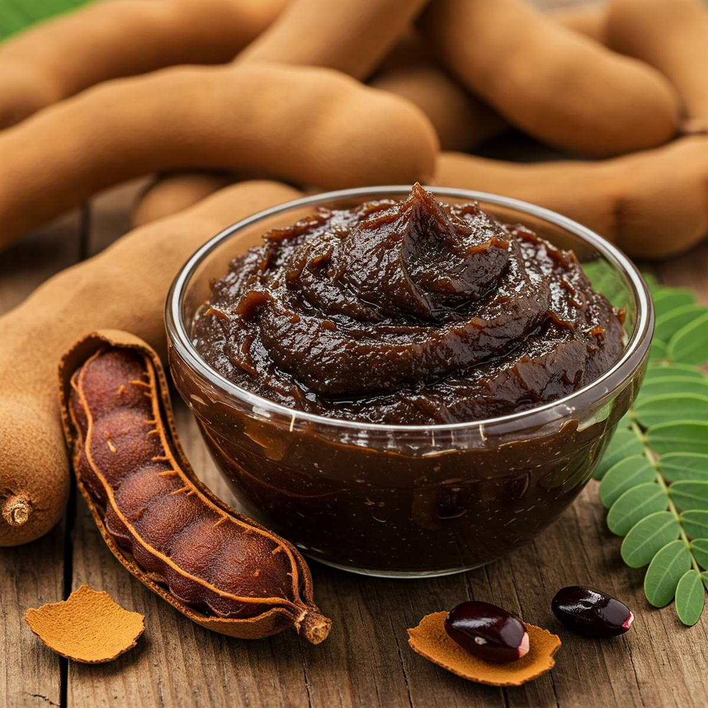

Samlor Machu
សម្លម្ជូរត្រី
Samlor Machu is a traditional Khmer sour soup made with fresh fish, morning glory, and a mix of tangy ingredients like tamarind and pineapple. It has a light, refreshing flavor that balances sour and savory, making it a comforting and healthy dish often served with steamed rice.

Ingredients
Fish (Snakehead or Tilapia)

400g
Buy NowMorning Glory

1 bunch
Buy NowPineapple

1 cup (sliced)
Buy NowTomatoes

2 medium
Buy NowTamarind Paste

2 tbsp
Buy NowLemongrass

2 stalks
Buy NowGalangal

1 small piece
Buy NowChili

Optional, 2 pieces
Buy Now-
Step 1: Prepare the ingredients
- Cut the fish into medium pieces
- Wash and cut morning glory into sections
- Slice pineapple and tomatoes
-
Step 2: Prepare the broth
- Bring a pot of water to a boil
- Add lemongrass and galangal
- Let it simmer to release the aroma
-
Step 3: Add the sour base
- Add tamarind paste to the broth
- Stir well until fully dissolved
-
Step 4: Cook the fish
- Add the fish pieces into the soup
- Cook until the fish is tender
-
Step 5: Add vegetables
- Add pineapple and tomatoes
- Then add morning glory
- Cook briefly until vegetables are just tender
-
Step 6: Final touches
- Add chili if desired
- Taste and adjust flavor
-
Step 7: Serve
- Serve hot with steamed rice